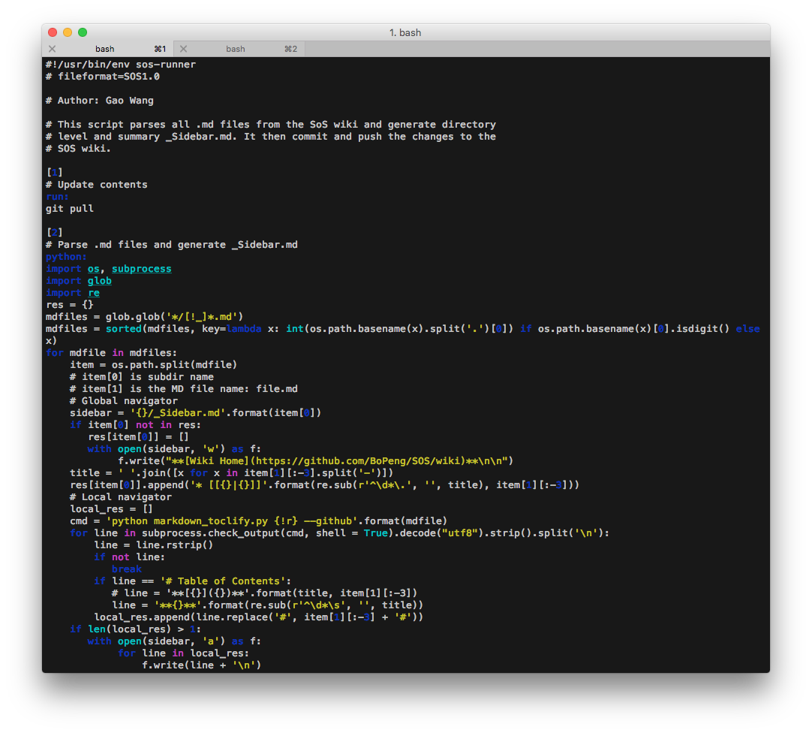

Conversion of SoS files¶
The sos convert command allows you to convert from .sos to some other formats including ipynb (Jupyter notebook), HTML and MD (markdown), and from .ipynb to .sos. You can get a list of converters using command
!sos convert -h
Command line interface¶
The convert command uses file extension and an option --to to determine the converter to use, and allows you to convert to a file or print the output to standard output. For example, you can use command
% sos convert myscript.sos myscript.htmlto convert a sos script to a HTML file, or
% sos convert myscript.sos --to htmlto write the HTML file to standard output.
If you would like to know available parameters for a particular converter, you can use option -h
!sos convert myscript.sos --to html -h
SoS -> HTML¶
The sos to html converter converts .sos script to HTML format. It can be either written to a HTML file, or to standard output if option --to html is specified without a destination filename.
!sos convert ../examples/update_toc.sos update_toc.html
The converter also accepts a number of parameters (as shown above). The raw parameter adds a URL to filename in the HTML file so that you can link to the raw .sos file from the .html output. The linenos adds line numbers, and style allows you to choose from a number of pre-specified styles. Finally, the view option would open the resulting HTML file in a browser.
For example,
sos convert ../examples/update_toc.sos --to html --view --style xcodewould show a HTML file as

SoS -> ipynb¶
You can convert an existing SoS script to the .ipynb format using command
$ sos convert myscript.sos myscript.ipynband open the resulting notebook from the web interface.
Depending on how the sos file was written (or converted from .ipynb file), sos takes different approach in splitting content of the script into cells of ipython notebook. More specifically,
- If the script contains cell spliting magic
%cell, sos would split the sos script according to%cell, and restore proper metadata (e.g. kernel used for each cell) and execution index. Such a.sosfile is usually exported from commandsos convert ipynb sos --all. - If the script does not contain cell spliting magic, sos will split each step into a separate cell.
The resulting .ipynb files have only input code and markdown cells. However, you can execute the notebook from command line if you add an -e (or --execute) option to the converter. That is to say, if you execute
$ sos convert myscript.sos myscript.ipynb --executeYou would get a notebook with both input and output cells, as if you have opened the non-executed ipynb file and selected Cell -> Run all.
SoS -> term¶
You can print out a .sos script on to the terminal with syntax highlighting. For example, command
% sos convert ../examples/update_toc.sos --to termwould produce 
SoS -> Markdown¶
This converter is still in experimental stage and you are welcome to improve the style of output MD files.
ipynb -> SoS¶
A Jupyter notebook can contain markdown cell and code cell with different kernels, and a sos cell might or might not contain a real sos step (with section header).
You can save a Jupyter notebook with SoS kernel to a SoS script using File -> Download As -> SoS from the browser, or using command
$ sos convert myscript.ipynb myscript.sosThe conversion process will export the workflow defined in the jupyter notebook in the resulting .sos file, ignoring all cell magics, non-sos cells, and sos cells that do not start with section headers. The resulting .sos file is a proper SoS workflow and can be executed by the sos command in batch mode.
If you would like to keep most of the information of the Jupyter notebook, you can convert the notebook using option --all (or -a),
$ sos convert myscript.ipynb myscript.sos --allThis option will export each cell with a %cell magic and record meta data in the .sos file. The resulting file can be converted back to ipynb format with minimal lose of information (without result), but might not be able to be executed in batch mode.
ipynb -> HTML¶
This command essentially calls command jupyter nbconvert --to html to convert notebook to HTML format. In addition to standard and third-party (e.g. template from hide code Jupyter extension) Jupyter templates, you can use a SoS provided template called sos-report to convert the Jupyter notebook to a static HTML file with only markdown and selected ouptput cells (cells with report_cell tag, output of cells with report_output tag, suitable as a report, and a button to unhide all details input and output cells except for those marked by a scratch tag.
ipynb -> pdf¶
This command essentially calls command jupyter nbconvert --to pdf to convert notebook to PDF format.
ipynb -> md¶
This command essentially calls command jupyter nbconvert --to markdown to convert notebook to Markdown format.
ipynb -> ipynb¶
This command converts a Jupyter notebook in another kernel to a SoS notebook, with the original kernel language as the language of each code cell.
If the original notebook has kernel python3, an option --python3-to-sos can be used to convert code cells to SoS.
This converter will copy the input notebook to output if the notebook is already a SoS notebook. However, if an option --inplace is specified, it will overwrite the original notebook with the converted one.
Note that if you already have a non-SoS notebook opened in Jupyter, you can simply use
Kernel -> Change kernel -> sos
to convert the kernel to SoS. You can then use the global language selector to select the appropriate default langauge for the notebook and re-execute the notebook to set the language to each cell.
Rmd -> ipynb¶
RMarkdown is a Markdown format with inline and block code executed by RStudio. SoS can convert RMarkdown files to a SoS notebook but the conversion is limited. In particular, SoS converts the block code to SoS code cells and the rest into Markdown cells, and leave inline expressions untouched. It also ignores all code options.
Note that SoS does not support string interpolation in markdown cells so inline expressions in RMarkdown are not converted. If you need to insert R expression in markdown, you can convert the paragraph into a code cell and use R to print the evaluated string to standard output (use cat function). Then you can add a %render magic to the beginning of the cell so to render the outputed markdown text.